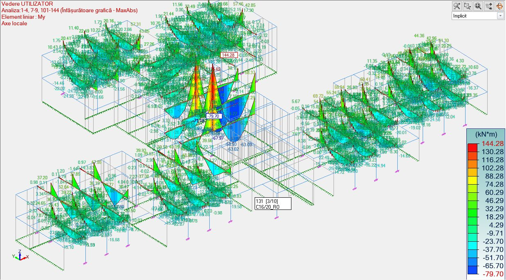
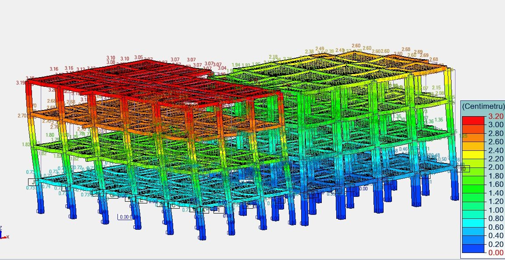
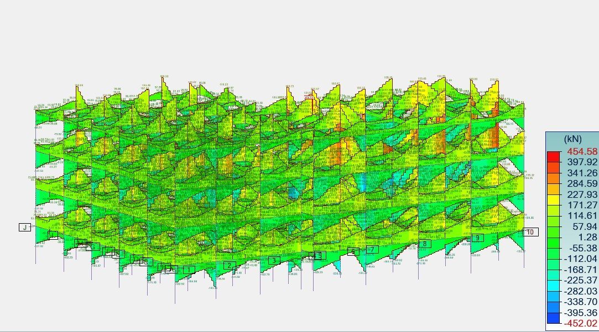
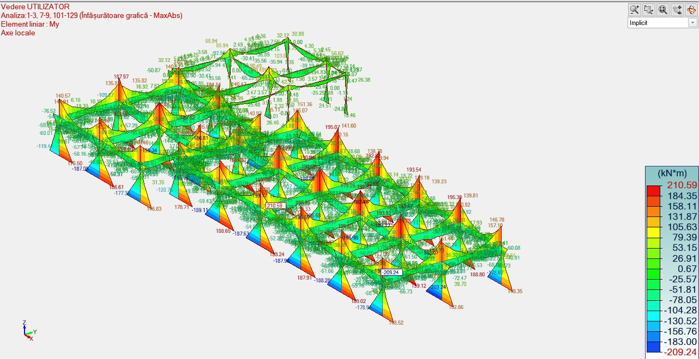
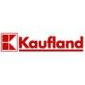
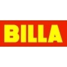
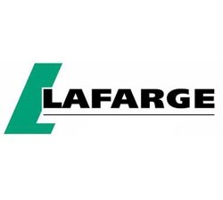
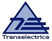
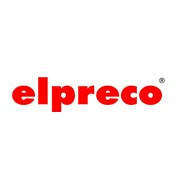

Știm ce e sub fundația ta.
Studii geotehnice cu laborator propriu atestat, expertize și verificări tehnice A1 și Af, proiecte de rezistență pentru clădiri din zidărie, beton armat, metal sau lemn. Lucrăm în toată țara.
Ce facem

Studii geotehnice
Foraje, penetrări SPT și CPT, analize în laboratorul propriu, pentru clădiri, drumuri, parcuri fotovoltaice și eoliene.

Verificări și expertize
Expertize pentru beton, beton armat, zidărie și lemn, cu încercări nedistructive: pahometrie, sclerometrie, ultrasunete.

Proiectare structurală
Construcții civile, industriale și hidrotehnice, drumuri, amenajări și consolidări, cu asistență tehnică pe execuție.

Ridicări topografice
Stații totale și stații GPS de precizie, cu prelucrarea datelor în programe specializate.
Calculăm fiecare structură în model 3D
Analize realizate de inginerii noștri pe proiecte reale: deplasări sub încărcări seismice, eforturi axiale în stâlpi, momente încovoietoare în grinzi.



Din portofoliu
Beneficiari




